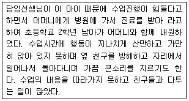
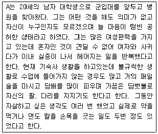
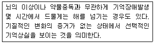
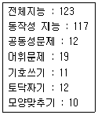
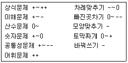
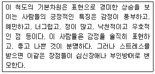
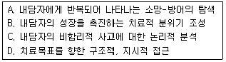
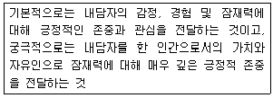

임상심리사-2급 (2006-08-16 기출문제)
1과목: 심리학개론
1. 심리검사의 타당도를 측정하는 방법 중 검사의 내용이 측정하려는 속성과 일치하는지를 논리적으로 분석 검토하여 결정하는 것은?
- 예언타당도
- 공존타당도
- 구성타당도
- 내용타당도
(정답률: 92%)

2. 성격이론에 대한 설명으로 틀린 것은?
- 유형론이 비연속적 범주에 의해서 성격특징들을 기술하는데 비해 특성론은 연속적인 속성으로 성격특징들을 파악하고 기술한다.
- Adler 이론에서는 열등감, 보상, 우월성 추구가 핵심적 개념이다.
- 행동적 성격이론에 따르면 성격은 개인이 타고 났거나 상당히 지속적인 속성이며 학습에 의해 형성된 것이다.
- Rogers가 묘사한 “완전히 기능하는 인간”은 경험에 대한 개방, 자신에 대한 신뢰, 내적 평가, 성장의지를 가진 사람이다.
(정답률: 75%)
3. 어떤 신입지원자의 단정한 외모를 좋게 본 면접관이 그 지원자가 예의 바르고, 성격이 좋으며, 능력도 뛰어날 것이라고 추론하여 좋은 점수를 준다면 이는 어떤 이유 때문인가?
- 후광효과(halo effect)
- 최신효과(recency effect)
- 상호성 원리(reciproity principle)
- 잠복효과(latent effect)
(정답률: 96%)
4. 영희는 시험 중에 커닝을 하고 싶었지만 들키게 되면 선생님이 자신을 인정하지 않고 혼낼까봐 두려워서 커닝을 하지않았다. 영희는 Kohlberg의 도덕성 단계 중 어디에 해당하지 않았다. 영희는 Kohlberg의 도덕성 단계 중 어디에 해당하는가?
- 전입습 수준
- 인습 수준
- 후인습 수준
- 변등법적 조작수준
(정답률: 63%)
5. 현상학적 이론에 대한 설명으로 틀린 것은?
- 인간을 성취를 추구하는 존재로 파악한다.
- 인간을 자신의 환경에 굴복하지 않고 오히려 환경을 통제하고 조정할 수 있는 적극적인 힘을 갖고 있는 존재로 파악한다.
- 현재 개인이 경험하고, 느끼고, 행동하는 것이 중요하며, 개인의 진정한 모습을 이해하는 것도 이를 통해 가능하다고 본다.
- 인간은 타고난 욕구에 끌려 다니는 존재로 간주한다.
(정답률: 96%)
6. 대상에 대해 상반되는 정보가 순서대로 제시되는 경우, 먼저 제시된 정보가 나중에 제시된 정보보다 인상형성에 더 큰 영향을 미치는 현상은?
- 초두효과
- 최신효과
- 후광효과
- 일관성 효과
(정답률: 78%)
7. 개인이 태도를 형성하는 과정을 일관성 원리로 설명하고자하는 이론 중에서 최소노력의 원리를 이용하여 변화의 방향성을 예언하는 이론은?
- 균형이론
- 기대-가치이론
- 인지부조화이론
- 유인가이론
(정답률: 30%)
8. 기억에 정보를 저장하기 위해서 환경의 물리적 정보의 속성을 기억에 저장할 수 있는 속성으로 변화시키는 과정은?
- 주의과정
- 각성과정
- 부호화과정
- 인출과정
(정답률: 86%)
9. 사람이 아무리 노력하여도 주어진 상황이 절대로 바뀌지 않을 때 “학습된 무력감(learned helpessness)'을 느끼게 된다고 주장한 이론가는?
- Seligman
- Skinner
- Premack
- Michael
(정답률: 59%)
10. 귀인에 대한 설명으로 틀린 것은?
- 어떤 행동이나 그 결과에 대한 원인을 찾는 과정이다.
- 행동에 작용하는 외부요인이 상황 속에 강할수록 행동의 원인을 상대적으로 내부요인에 덜 귀인하는 현상을 할인효과라고 한다.
- 사람들은 대체로 남의 행동이건 자신의 행동이건 외부행동으로 귀인하기 보다는 내부요인에 귀인하는 경향이 있다.
- 타인의 부정적 행동에 대해서는 일반적으로 외부귀인을 하는 경향이 있다.
(정답률: 58%)
11. 조련사가 돌고래를 훈련시키는 과정을 설명할 수 있는 조건형성 현상은?
- 자극일반화
- 소거
- 변별조건형성
- 조형
(정답률: 93%)
12. Piaget의 인지발달 단계에 대한 설명으로 맞는 것은?
- 감각운동기에 대상영속성을 파악하게 된다.
- 구체적 조작기의 가장 중요한 지적능력은 추상적 사고능력이다.
- 보존개념이 확립되는 것은 전조작기이다.
- 자기중심적 사고는 전조작기에만 나타난다.
(정답률: 96%)
13. 다음 중 프리맥(Premack)의 원리를 이용한 강화가 아닌 것은?
- 부모들이 자녀의 시험성적이 좋으면 자녀의 귀가시간 제한을 해제한다.
- 부모들은 아이가 나중에 숙제를 하겠다고 하면 먼저 놀도록 허용하기 보다는 놀기 전에 숙제를 하도록 요구한다.
- 학교에서 교사들은 학생들이 쓰기과제를 성공적으로 끝마친 후에 놀도록 허용한다.
- 보육교사들은 원아들이 휴관을 바라보면서 가만히 앉아 있는 행동 다음에는 가끔 벨이 울림과 동시에 '뛰어놀고 떠들고 놀라'는 지시를 한다.
(정답률: 45%)
14. Kelley의 공변원리에 의하면 3가지 정보를 이용해 귀인이 이루어진다고 본다. 이 3가지 정보에 포함되지 않는 것은?
- 일치성
- 특이성
- 일관성
- 안정성
(정답률: 60%)
15. 노름꾼들이 빠찡꼬에서 헤어 나오지 못하는 것은 강화계획 중 어디에 해당하는 현상인가?
- 가변간격 강화
- 고정간격 강화
- 가변비율 강화
- 고정비율 강화
(정답률: 69%)
16. 노년기의 일반적인 성격변화에 해당하지 않는 것은?
- 사고의 융통성과 개방성이 증가한다.
- 변화에 대한 두려움이 커진다.
- 내향성과 수동성이 증가한다.
- 통제력에 대한 자신감이 감소한다.
(정답률: 87%)
17. 다음 중 감각기억에 대한 설명으로 틀린 것은?
- 지속시간이 1 ~ 2초 정도로 매우 짧다.
- 실제 인출될 수 있는 용량보다 훨씬 큰 기억용량을 가지고 있다.
- 전체보고법 방식이 부분보고법 방식보다 영상기억의 용량이 더 크다.
- 잔향기억이 영상기억보다 지속시간이 더 길다.
(정답률: 55%)
18. A타입 성격의 특성이 아닌 것은?
- 강한 경쟁심
- 약속 불이행
- 강한 적대감
- 쉽게 긴장
(정답률: 63%)
19. 기쁨이나 만족을 제거함으로써 특정 행동의 발생확률을 감소시키는 것은?
- 정적 강화
- 부적 강화
- 정적 처벌
- 부적 처벌
(정답률: 60%)
20. 인간의 성행동을 연구한 Kinsey 등은 남성의 성행동과 여성의 성행동을 주로 어떤 방법을 통해 연구했는 가?
- 실험법
- 검사법
- 조사법
- 관찰법
(정답률: 77%)
2과목: 이상심리학
21. 18세 이상의 성인에게 진단되며, 15세 이전에 품행 장애를 나타낸 증거가 있어야만 내릴 수 있는 성격장애는?
- 연극성 성격장애
- 경계성 성격장애
- 반사회성 성격장애
- 분열형 성격장애
(정답률: 75%)
22. 다음의 환자에게 가능한 진단명은?

- 전반적 발달 장애
- 품행 장애
- 절대적 반항장애
- 주의력 결핍 및 과잉행동 장애
(정답률: 87%)
23. 신진대사 이상으로 오는 정신지체와 관계없는 것은?
- 다운증후군
- 나이만크병
- 래쉬-나이안 증후군
- 페닐케돈뇨증
(정답률: 76%)
24. 다음의 환자는 어떤 진단 범주에 해당하는가?

- 주요 우울 장애
- 알코올로 유발된 기분 장애
- 경계성 성격장애
- 반사회성 성격장애
(정답률: 59%)
25. 품행장애의 특징으로 옳은 것은?
- 품행장애 아동 중에 85 - 90%가 불안과 우울증을 보인다.
- 품행장애의 발병 시기가 빠르면 빠를수록 성인이 되었을 반사회성 성격장애를 지닐 가능성이 높다.
- 품행장애에 나타나는 반사회적 행동은 대부분 15세경에 시작하여 22세가 되면 절정에 이른다.
- 품행장애 아동은 주의력결핍 및 과잉행동 장애 아동과 확연히 구분된다.
(정답률: 59%)
26. 알코올 의존의 원인으로 틀린 것은?
- 생물학적 입장에서는 유전적 요인이나 알코올 신진대사 기능에서의 차이를 원인으로 본다.
- 사회문화적 관점에서는 음주에 대한 사회의 관대한 태도가 알코올 의존의 원인이라고 본다.
- 행동주의 입장에서는 알코올이 불안을 줄여주는 단기적 강화 효과가 알코올 의존의 원인이 된다고 본다.
- 정신분석적 입장에서는 알코올 의존을 남성다움을 나타내는 한 방법으로 간주한다.
(정답률: 57%)
27. 소아기 자폐증의 임상양상에 대한 설명으로 틀린것은?
- 눈맞춤이 잘 이루어지지 않는다.
- 자폐아들도 생후 2~3개월이 되면 주변 사람들의 자극에 대해서 웃는 반응을 보인다.
- 자폐아동들은 부모와의 애착이 결여되어 있다.
- 자폐아동은 의사소통상의 결함을 보인다.
(정답률: 72%)
28. DSM-IV에서 성격장애를 몇 개의 군으로 나누고 있다. 이중 극적이고 감정적이며 변덕스럽고 충동적인 행동을 특징으로 하는 군에 해당하지 않는 것은?
- 반사회성 성격장애
- 의존성 성격장애
- 연극성 성격장애
- 자기애성 성격장애
(정답률: 50%)
29. 여성의 알코올 중독에 관한 설명으로 옳은 것은?
- 알코올 중독의 남녀 비율은 비슷한 수준이다.
- 여성은 유전적으로 남성보다 알코올 중독의 가능성이 더 높다.
- 여성 알코올 중독자들은 남성 알코올 중독자들보다 우울을 더 많이 경험하고 자살시도 횟수가 더많다.
- 여성은 남성보다 체지방이 많기 때문에 술의 효과가 늦게 나타나고 대사가 빠르다.
(정답률: 82%)
30. 주의력 결핍 및 과잉행동장애의 DSM-IV 진단기준으로 맞지 않는 것은?
- 과잉행동이나 중동 및 부주의 증상이 7세 이전부터 나타난다.
- 증상으로 인한 장애가 2가지 이상의 상황(예를 들면 학교, 가정)에서 나타난다.
- 부주의나 과잉행동 혹은 충동성 증상이 6가지 이상 6개월 이상 지속적으로 나타난다.
- 정형화된 똑같은 동작을 반복한다.
(정답률: 72%)
31. 아동청소년기 정신장애에 관한 설명 중 틀린 것은?
- 분리불안장애는 전반적인 발달장애의 범주에 속한다.
- 아동기 우울장애는 행동적 증후들이나 신체증상들로 주로 표현된다.
- 이차적 유뇨증은 얼마간 소변을 잘 가리다가 주로 환경적 변화로 인해 소변을 못 가리는 특징이 있다.
- 정신지체는 만성적이고 불가역적인 상태로 만18세 이전에 시작된다.
(정답률: 60%)
32. 다음은 해리성 장애의 어떤 분류에 해당되는가?(오류 신고가 접수된 문제입니다. 반드시 정답과 해설을 확인하시기 바랍니다.)

- 해리성 둔주(dissociative fugue)
- 해리성 정체감 장애(dissociative identity disorder)
- 이인증(depersonalization)
- 해리성 기억상실증(dissociative amnesia)
(정답률: 19%)
33. 양극성 장애와 주요 우울장애의 비교설명으로 맞는 것은?
- 주요 우울장애와 양극성 장애의 발생률은 비슷하다.
- 주요 우울장애는 여자가 남자보다, 양극성 장애는 남자가 여자보다 높은 발생률을 보인다.
- 주요 우울장애는 사회경제적으로 낮은 계층에서 발생 비율이 높고, 양극성 장애는 높은 계층에서 더 많이 발견된다.
- 주요 우울장애 환자는 성격적으로 자아가 약하고, 의존적이며, 강박적인 사고를 보이는 경우가 많은데 비해, 양극성 장애의 경우에는 병전 성격이 히스테리성 성격장애의 특징을 보인다.
(정답률: 50%)
34. 망상장애의 하위유형의 내용이 맞는 것은?
- 과대형 - 유명인, 전문인이 자신과 사랑에 빠졌다.
- 피해형 - 자신이 모함 받고 있거나 감시당하고 있다.
- 색정형 - 신으로부터 계시를 받았다.
- 신체형 - 배우자나 연인이 부정하다.
(정답률: 79%)
35. 다음 중 과제수행에 필요한 여러 가지 인지기능 즉 과제를 하위과제로 쪼개기, 순서별로 배열하기, 계획하기, 시작하기, 결과 점검하기, 중단하기 등의 기능을 수행하지 못하는 치매증상은?
- 실어증
- 실인증
- 지남력장애
- 실행지능장애
(정답률: 73%)
36. 환각(hallucination)은 다음 중 어떤 부분의 왜곡인가?
- 지각
- 행동
- 사고
- 관계
(정답률: 62%)
37. 이상행동에 대한 모델과 그 설명으로 맞는 것은?
- 인지 모델 - 이상행동은 잘못된 사고과정의 결과로서 가장 잘 이해된다.
- 행동주의 모델 - 이상행동은 자기실현을 하는데 있어서 오는 어려움에서 생긴다.
- 인본주의 모델 - 이상행동은 무의식적 내적 갈등의 상징적 표현이다.
- 사회문화 모델 - 이상행동은 정상행동과 같이 학습의 결과로 습득되며 학습원리로 치료할 수 있다.
(정답률: 75%)
38. 조증 삽화의 진단과 관련된 증상은?
- 불면증
- 체중감소
- 환각
- 사고의 비약
(정답률: 57%)
39. 다음 중 DSM-IV의 틱장애에 대한 설명으로 틀린 것은?
- 뚜렛장애는 다양한 음성 틱만 1년 이상 지속되는 경우에 해당한다.
- 운동 틱은 특이한 동작을 갑작스럽고 반복적으로 나타내는 것이다.
- 음석 틱은 갑작스럽고 반복적인 소리를 내는 행동을 말한다.
- 틱장애는 일과성 틱장애, 만성적 운동/음성 틱장애 및 뚜렛장애로 분류된다.
(정답률: 80%)
40. DSM-IV에서 신체형 장애의 하위 범주에 속하는 것은?
- 전환장애 (conversion disorder)
- 다중인격 (multiple personality)
- 심인성 건망증 (psychogenic amnesia)
- 허위성장애 (factitious disorder)
(정답률: 70%)
3과목: 심리검사
41. 동일한 검사를 동일한 집단에 1주일 또는 1개월의 간격을 두고 다시 실시하여 전후 검사 결과를 상관계수로 계산하는 신뢰도는?
- 동형검사신뢰도
- 재검사신뢰도
- 반분신뢰도
- 문항내적 합치도
(정답률: 71%)
42. 성취도 검사와 적성검사의 특성에 대한 설명으로 맞는 것은?
- 성취도 검사와 적성검사의 차이는 문항형식에 있다.
- 성취도는 과거 중심적이고 적성은 미래 중심적이라고 할 수 있다.
- 성취는 유전의 영향을 , 적성은 환경의 영향을 많이 받는 것으로 본다.
- 대부분의 학자들은 적성을 특수능력보다는 일반적 능력으로 본다.
(정답률: 63%)
43. 두뇌의 좌측 측두엽 손상시 주로 나타나는 현상은?
- 언어학습 장애
- 시지각 장애
- 공간학습 장애
- 운동감각 장애
(정답률: 50%)
44. 22세 된 여대생이 수업시간에 집중이 잘 안되고, 수업내용을 따라가기 어렵다는 이유로 지능검사를 받았고, 그 결과는 다음과 같다. 이 결과에 대한 해석으로 틀린 것은?

- 긴 자료를 암기해야 할 경우 이를 나누어서 암기하는 방식이 도움이 될 수 있다.
- 피검사자는 학습할 내용이나 자신의 생각을 말로 표현함으로서 학습을 증진시킬 수 있다.
- 피검사자는 습득한 지식, 잠재력은 강점을 보인다.
- 피검사자는 학습열의가 높고, 수행속도가 빨라 자신의 능력을 발휘하는데 기민한 모습을 보인다.
(정답률: 68%)
45. 발달검사를 사용할 때 고려해야 할 사항이 아닌 것은?
- 다중기법적 접근을 취해야 한다.
- 경험적으로 타당한 측정도구를 사용해야 한다.
- 규준에 의한 발달적 비교가 가능해야 한다.
- 일반적으로 기능적 분석이 가장 유용하다.
(정답률: 70%)
46. 임상환자의 WAIS검사 반응 특징으로 평균에서의 이탈도가 다음과 같이 나타났을 때 이에 대한 설명으로 맞는 것은?

- 언어성 검사점수는 동작성 검사점수보다 일반적으로 낮다.
- 정신분열증 환자들의 특징이다.
- 모양맞추기는 토막 짜기보다 훨씬 높다.
- 대부분의 경우 동작성 소검사보다 언어성 소검사쪽이 낮다.
(정답률: 71%)
47. 정신과에 내원한 환자에게 MMPI를 실시한 결과 L, K 척도는 40점 이하 , F 척도는 80점 이상으로 나왔다. 이 피검사자가 보일 수 있는 문제로 적합하지 않은 것은?
- 두뇌손상으로 인해 정서적 문제를 심하게 겪고 있는 경우
- 자아정체 위기를 겪고 있는 청소년
- 외견상 잘 나타나지 않으나 사고장애를 가진 환자
- 사고 후 보상을 받기 위해 중상을 과장하는 교통사고 환자
(정답률: 60%)
48. 다음 중 발달적 선별검사의 설명으로 틀린 것은?
- 발달적 선별검사의 주 목적은 정상에서 이탈될 위험이 있는 아동을 확인하기 위함이다.
- 베일리(Bayley) 검사는 대표적인 발달검사이다.
- 덴버발달선별검사는 자폐아동을 선별하는데 가장 많이 사용된다.
- 대부분의 발달선별검사에는 아동의 근육운동에 대한 평가가 포함되어있다.
(정답률: 62%)
49. 주제 통각 검사 (Thematic Apperception Test : TAT) 에 대한 설명으로 틀린 것은?
- 자아와 환경관계, 역동을 평가하는 검사이다.
- 개인이 자각하지 못하는 억제된 요소들까지 드러나게 해준다.
- 한 장의 백지카드가 포함되어 있다.
- 31장의 카드로 구성되어 있으며, 각 카드마다 평범 반응과 채점 기준이 명시되어 있는 구조적 검사이다.
(정답률: 59%)
50. 로르샤하 (Rorschach) 검사에서 반응의 결정인자인 운동 반응 (Movement : M)에 대한 설명으로 틀린 것은?
- M 반응이 많은 사람은 행동이 안정되어 있고 능력이 뛰어남을 나타낸다.
- M 반응이 많을수록 그 사람은 그의 세계의 지각을 풍부하게 만들기 위해 자유롭게 구사할 수 있는 상상력을 지니고 있다.
- 상쾌한 기분은 M 반응은 수를 증가시킨다.
- 좋은 형태의 수준을 가진 M의 출현은 높은 지능의 존재를 부정하는 것이며 가능한 M이 많이 나타난다는 사실은 낮은 지능을 의미한다.
(정답률: 74%)
51. 투사적 성격검사와 비교할 때, 객관적 성격검사의 장점은?
- 객관성의 증대
- 반응의 다양성
- 방어의 곤란
- 무의식적 내용의 반응
(정답률: 61%)
52. 초등학교 학생의 성취도를 알아보기 위하여 평가를 실시하고자 한다. 성취도 검사의 범주에 포함되지 않는 것은?
- 독해검사
- 쓰기검사
- 산수검사
- 지능검사
(정답률: 76%)
53. 신경심리검사에 대한 설명으로 맞는 것은?
- Broca와 Wernicke는 실행증 연구에 뛰어난 업적을 남겼으며, Benton은 임상 신경심리학의 창시자라고 할 수 있다.
- X레이, MRI 등 의료적 검사결과가 정상으로 나온 경우에는 신경심리검사보다는 의료적 검사결과를 신뢰하는 것이 타당하다.
- 신경심리검사는 고정식 (fixed) 바테리와 융통식(flexible) 바테리 접근이 있는데, 두 가지 접근 모두 하위검사들이 독립적인 검사들은 아니다.
- 신경심리검사는 환자에 대한 진단, 환자의 강점과 약점, 향후 직업능력의 판단, 치료계획, 법의학적 판단, 연구 등에 널리 활용된다.
(정답률: 63%)
54. J. P. Guilford의 지능구조 입체모형설의 구성내용에 포함되지 않는 것은?
- 내용(content)
- 소산(product)
- 조작(operation)
- 파지(retention)
(정답률: 43%)
55. 웩슬러 지능검사의 소검사 중 병전 지능 추정에 사용할 수 있는 것은?
- 이해문제, 모양 맞추기
- 차례 맞추기, 공통성 문제
- 산수문제, 숫자 외우기
- 어휘문제, 기본지식
(정답률: 45%)
56. MMPI의 임상척도 중 자신의 신체적 기능 및 건강에 대하여 과도하고 병적인 관심을 갖는 건강염려증적인 양상을 측정하는 척도는?
- 심기증 척도(Hs)
- 우울증 척도(D)
- 히스테리 척도(Hy)
- 편집증 척도(Pa)
(정답률: 75%)
57. 다음은 다면적 인성검사(MMPI)의 임상척도 중 어떤 척도에 대한 설명인가?

- 건강염려증 척도
- 히스테리 척도
- 강박증 척도
- 경조증 척도
(정답률: 64%)
58. 지능과 관련된 설명으로 옳지 않은 것은?
- 지능은 학업성적과 관련이 있다.
- 지능발달은 성격과 관련이 없다.
- 지능과 가정의 양육행동과는 관련이 있다.
- 일반적인 지능에 있어서 남녀의 성차가 없다.
(정답률: 70%)
59. 표준화된 검사가 다른 검사에 비하여 객관적인 해석을 가능하게 해주는 이유는?
- 타당도가 높기 때문이다.
- 규준이 확보되어 있기 때문이다.
- 신뢰도가 높기 때문이다.
- 실시가 용이하기 때문이다.
(정답률: 69%)
60. Gesell의 발달척도를 토대로 제작된 한국형 영유아 발달 검사의 평가영역은?
- 적응행동 - 조대운동 - 미세운동 - 언어발달 - 개인.사회적 행동
- 지각운동 - 적응행동 - 언어발달 - 개인.사회적 행동 - 감각운동
- 적응행동 - 언어발달 - 개인.사회적 행동 - 지각운동 - 운동발달
- 정서적 행동 - 운동발달 - 적응행동 - 언어발달 - 개인.사회적 행동
(정답률: 31%)
4과목: 임상심리학
61. 내담자중심 치료에서 치료자의 주요 기능이 아닌 것은?
- 자유로운 분위기를 제공하는 것
- 내담자 자신이나 자신이 관련된 세계에 대한 스스로의 지각을 인식하게 하는 것
- 충고, 제안, 해석 등을 제공하는 것
- 내담자 자신에 대한 깊은 이해를 얻는 것
(정답률: 60%)
62. 심리적 자문에 대한 설명으로 틀린 것은?
- 인간행동의 지식과 이론을 응용하여 문제에 대한 전문적인 조언을 제공하는 것을 말한다.
- 일대일 심리치료와는 달리 심리적 자문은 큰 집단의 사람들이나 전체 조직을 대상으로 도움을 줄 수 있다.
- 효과적인 자문가가 되기 위해서는 유능한 대인관계 및 의사소통기술이 필요하다.
- 심리치료와는 달리 심리적 자문에서는 전문가로의 윤리적 행동은 크게 중요하지 않다.
(정답률: 60%)
63. 임상심리학자는 내담자와 이중관계를 갖지 말아야 한다. 이와 가장 관련이 깊은 윤리원칙은?
- 성실성
- 유능성
- 사회적 책임
- 전문적 책임
(정답률: 41%)
64. 검사가 특정의 활동영역에서 한 개인이 수행할 것을 정확히 예언할 수 있다면, 이 검사는 어떤 유형의 타당도가 높다고 할 수 있는가?
- 내용타당도
- 구성타당도
- 준거관련 타당도
- 안면타당도
(정답률: 53%)
65. 주의력 결핍_과다행동장애(ADHD)는 상황을 종합적으로 분석하고, 목표를 계획하고, 실행하는 기능에 결합을 보인다고 한다. 노와 행동과의 관계에서 볼 때 어떤 부위의 결함을 사사하는가?
- 전두엽의 손상
- 측두엽의 손상
- 변연계의 손상
- 해마의 손상
(정답률: 80%)
66. 다음 중 임상심리학의 초기 공헌자들의 업적으로 연결이 올바른 것은?
- Binet - 성격검사 개발
- Wundt - 정신장애의 예방 강조
- Cattell - 학술지 (The Psychological Clinic) 발간
- witmer - 최초의 심리진료소 개설
(정답률: 74%)
67. 미누친의 구조적 가족치료 기법에서 치료적 개입의 표적은?
- 가족체계의 병리
- 각 개인의 병리
- 다른 가족들과의 관계
- 확인된 환자
(정답률: 67%)
68. 지역사회 심리학에서 지향하는 바가 아닌 것은?
- 자원 봉사자 등 비전문 인력의 활용
- 정신 장애의 예방
- 정신 장애인의 사회 복귀
- 정신과 병동 등 입원 시설의 확장
(정답률: 71%)
69. 다음 중 주로 인간중심의 치료과정에서 강조되는 내용으로 적합한 것은?

- A, C, D
- B
- C, D
- A, D
(정답률: 78%)
70. 행동평정 척도에 관한 설명으로 맞는 것은?
- 내현적이거나 추론된 성격 측면을 평가하는데 적합하다.
- 후광효과가 작용하기 어렵다.
- 평정하고자 하는 속성을 명확하게 정의해야 한다.
- 개개 항목에 대해 극단적인 점수에 평정하는 경향이 있다
(정답률: 50%)
71. 만성정신질환자의 재활을 위해 지역사회에서 요구되는 원칙이 아닌 것은?
- 지속적인 치료와 재활을 유지하도록 지지하고 격려
- 재발방지 차원에서 지속적으로 약을 복용하도록 격려
- 스스로 자신의 권익을 주장하고 옹호하도록 격려
- 스트레스를 적게 주는 활동을 요구하고 역활기대치를 낮추어 격려
(정답률: 49%)
72. 철수의 엄마는 아침마다 철수가 심한 떼를 쓰면 기분이 상하기 때문에, 철수가 떼를 쓰기 전에 미리 깨우고, 먹여주고, 가방을 챙겨서 학교에 데려다 주는 행동을 계속하고 있다. 철수엄마의 행동을 가장 잘 설명한 것은?
- 정적강화
- 처벌
- 무시
- 회피조건형성
(정답률: 75%)
73. 환자에게 자신의 메시지를 정교화하도록 도울 뿐만 아니라 면접자가 그 메시지를 이해하고 있다는 것을 확실히 하기 위하여 사용되는 의사소통기법은?
- 요약
- 명료화
- 래포형성
- 부연설명
(정답률: 57%)
74. 자해 행동을 보이는 아동에 대한 심리평가로 가장 적합한 것은?
- 부모면접
- 자기보고형 성격검사
- 투사법 검사
- 행동평가
(정답률: 30%)
75. 체중 조절을 위하여 식이요법을 시행하는 사람이 매일 식사의 시간, 종류, 양과 운동량을 구체적으로 기록하고 있다면 이는 어떤 행동 관찰의 방법인가?
- 자기-감찰(self-monitoring)
- 통계적인 평가
- 참여 관찰(participant observation)
- 비참여 관찰(non-participant observation)
(정답률: 89%)
76. 행동의학에서 보는 관상동맥성 심장질환과 관련돼 대표적 성격 특성은?
- 완벽주의
- 낙관주의
- A 유형 성격
- C 유형 성격
(정답률: 75%)
77. 임상심리클리닉에 설치된 일방거울(one-way mirror)을 통해 결혼생활에 문제가 있는 부부의 대화 및 상호작용을 관찰하여 이들의 의사사통문제를 평가하는 관찰법은?
- 자연관찰법(naturalistic observation)
- 유사관찰법(analogue observation_
- 자기관찰법(self-monitoring observation)
- 참여관찰법(participant observation)
(정답률: 60%)
78. 환자와의 초기 면접에서 면접자가 주로 탐색하는 정보의 내용이 아닌 것은?
- 환자의 증상과 주 호소, 도움을 요청하게 된 이유
- 최근 환자의 적응기제를 혼란시킨 스트레스 사건의 유무
- 면접과정에서 드러나 고통스런 경험에 대한 이해와 심리적 격려
- 기질적 장애의 가능성 및 의학적 자문의 필요성에 대한 탐색
(정답률: 54%)
79. 아동의 바람직하지 못한 행동을 소거하기 위해 사용하기에 적합한 기법은?
- 행동연쇄(Chaining)
- 토큰 경제(Token economy)
- 과잉정정(Overcorrection)
- 주장훈련(Assertive training)
(정답률: 32%)
80. 중학교 2학년 여학생이 친구들에게 구타를 당한 뒤, 반에서 1,2등 했던 성적이 하위권으로 떨어지고 무단결석까지 하였다. 또한 부모에게 심하게 반항하며 성적으로 문란한 행동도 보이기 시작하였다. 이 학생을 도와주기 위한 가장 효과적인 방법은?
- 반사회적 성격의 경향성이 농후하므로, 양심을 높이는 기법이 필요하다.
- 이 학생이 경험한 좌절과 상처 등을 이해하고 우울증에 대한 치료를 해주어야 한다.
- 충동적인 행동을 조절해줄 수 있는 약물치료가 선행되어야 한다.
- 공부를 잘 할 수 있도록 효율저인 학습 및 인지 전략을 교육시켜야 한다.
(정답률: 80%)
5과목: 심리상담
81. 내담자가 예기적 불안을 회피하거나 집착하지 말고 바로 직면하도록 하기 위해서 예상되는 불안 및 공포를 의도적으로 익살을 섞어 과장되게 생각하고 표현하도록 하는 상담기법은?
- 비합리적 사고의 교정
- 역설적 의도
- 역할 연습
- 자기표현훈련
(정답률: 70%)
82. 파운틴하우스(Fountain House) 프로그램을 모델로 하는 정신장애자 직업재활을 위한 프로그램에 대한 설명으로 틀린 것은?
- 만약 환자가 맡겨진 일을 못해낼 경우에는 치료진이라도 그 일을 해내겠다는 내용을 계약서에 넣을 수 있다.
- 환자가 일을 하면서 부딪치는 직업적, 사회적 어려움을 상담할 수 있도록 정신보건전문가을 현장에 파견한다.
- 환자의 사회기술이나 직업기술이 부족하더라도 안심하고 직업훈련을 시킬 수 있는 보호적 환경이다.
- 환자들은 직업과 노력 정도에 따라 정규 직원과 대등한 보수를 받게 된다.
(정답률: 49%)
83. 성폭력 피해자와의 상담에 대한 내용으로 틀린 것은?
- 상담자는 내담자가 성에 대해 무지하다는 가정을 갖고 상담을 시작하면 관계형성에 어려움이 생긴다.
- 상담자는 피해자가 취해야 할 역할행동의 검토를 통해 필요한 대인관계를 익히도록 돕는다.
- 내담자 스스로 자기패배적 사고방식과 언어표현을 먼저 깨닫게 해주는 것이 중요하다.
- 강간피해자들을 위한 상담의 첫 단계 목표는 신뢰적 관계 형성, 우선적 관심사 처리, 지속적 상담 준비이다.
(정답률: 48%)
84. 집단모임에서 여러 명의 집단원들로부터 부정적이 피드백을 받은 한 집단원에게 다른 집단원이 그의 느낌을 묻자 아무렇지도 않다고 하지만 그의 얼굴 표정이 몹시 굳어있을 때, 지도자가 이를 직면하고자 한다. 다음 중 직면기법에 가장 가까운 반응은 아는 것인가?
- “00씨, 지금 느낌이 어떤가요?”
- “00씨가 방금 아무렇지도 않냐고 하는 말이 어쩐지 믿기지 않는군요. “
- “00씨, 내가 만일 00처럼 그런 지적을 받았다면 기분이 몹시 언짢겠는데요. “
- “00씨는 아무렇지도 않냐고 말하지만, 지금 얼굴이 아주 굳어있고 목소리가 떨리는군요. 내적으로 지금 어떤 불편한 감정이 있는 것 같은데, 00씨의 반응이 궁금하군요. “
(정답률: 41%)
85. 상담사례연구의 중요성이 아닌 것은?
- 상담자 자신의 전문적 능력 향상에 기여
- 상담자 자신의 내면적 갈등 해소에 도움
- 내담자의 현재 행동에 대한 이해 증진
- 상담자 상담접근 방법에 대한 이해 제공
(정답률: 73%)
86. 인간중심 상담이론에서 요구하는 상담자의 자세와 태도로 적합하지 않는 것은?
- 진실성
- 정확한 공감적 이해
- 무조건적이고 긍정적 존중
- 지적 능력
(정답률: 76%)
87. 만성정신질환에 대한 재황모델 단계 중 “핸디캡”의 정의로 가장 알맞은 것은?
- 원인요소에 의한 중추신경계 이상
- 생물학적 심리학적 구조나 기능에 이상이 있는 것
- 개인이 사회적 상황에서 주어진 역할이나 과제를 수행하지 못하거나 수행하는데 한계를 보이는 것
- 장애 때문에 사회에서 다른 사람에 비해 상대적으로 불이익을 받는 것
(정답률: 55%)
88. 다음 중 만성정신과 환자를 위한 정신재활치료에서 사례 관리의 목적은?
- 환자가 독립적인 사회생활을 할 수 있는 다양한 주거공간 확보
- 환자에게 필요한 다양한 서비스를 조정 통합
- 위기상황에서 환자의 증상과 사회적응을 급속히 인정
- 정신과 환자의 효율적인 대인관계 증진
(정답률: 70%)
89. 도박중독의 심리 사회적 특징에 대한 설명으로 맞는 것은?
- 도박 중독자들은 대체로 도박에만 집착할 뿐 다른 개인적인 문제를 가지지 않는다.
- 도박 중독자들은 직장에서 도박 자금을 마련하기 위해 남보다 더 열심히 노력한다.
- 심리적 특징으로 단기적인 만족을 추구하기 보다는 장기적인 만족을 추구한다.
- 도박행동에 문제가 있음을 받아들이지 않고 변명하고 논쟁하려 든다.
(정답률: 45%)
90. 효과적인 집단상담을 위해 고려해야 할 사항이 아닌 것은?
- 집단발달과정 자체를 촉진시켜 주기 위하여 의도적으로 게임을 활용할 수 있다.
- 매 회기가 끝난 후 각 집단 구성원에게 경험보고서를 쓰게 할 수 있다.
- 집단 내의 리더십을 위해 집단 상담자는 반드시 1인이어야 한다.
- 집단상담 장소는 가능하면 신체 활동이 자유로운 크기가 좋다.
(정답률: 87%)
91. 검사해석 상담시 주의해야 할 사항으로 틀린 것은?
- 검사 매뉴얼을 알고 이해하는 것이다.
- 내담자가 받은 검사의 목적과 제한점, 장점들을 검토하는 것이 중요하다.
- 결과가 확실하고 구체적으로 예언한다는 것을 알려주어야 한다.
- 검사결과가 내담자의 이용 가능한 다른 정보들과 연관돼어 제시되어야 한다.
(정답률: 75%)
92. 스트레스를 받았을 때 우리 몸에 나타내는 신체반응 단계 중 저항력과 면역력이 증가하는 단계는?
- 경고반응 단계
- 저항반응 단계
- 소진반응 단계
- 탈진반응 단계
(정답률: 59%)
93. 정신분석관점에서 내담자가 현재 대인관계 상황에서 보이는 주요한 갈등은 과거 중요한 타인에게서 느꼈던 감정이나 환상을 반복하여 활성화한 것으로 볼 수 있다. 상담과정에서 내담자가 과거 중요한 인물에게 느꼈던 감정이나 환상을 상담자에게로 이동시키는 것은?
- 방어기제
- 반동형성
- 전이
- 원초아
(정답률: 83%)
94. 다음은 무엇에 대한 설명인가?

- 공감
- 반영적 경청
- 내용의 재진술
- 수용적 존중
(정답률: 20%)
95. 중등학교 상담에서 비효율적인 교사의 태도는?
- 바람직한 상황판단과 문제해결 방법을 수용하도록 설득 한다.
- 학생의 문제를 경청한다.
- 건설적인 미래의 계획을 세우는 것을 돕는다.
- 동정보다는 학생 자신의 자립 능력을 자각하게 한다.
(정답률: 50%)
96. 학생의 시험불안을 감소시키는데 적용할 수 있는 상담기법은?
- 가치 명료화 집단상담
- 혐오치료
- 체계적 둔감법 또는 이완법
- 주장훈련
(정답률: 82%)
97. 사이버 상담의 유형에 대한 설명으로 틀린 것은?
- 채팅상담은 상담자와 내담자가 동시에 접속해서 실시간으로 상담이 진행되며, 전통적인 면대면 상담보다 더 효과적이다.
- 이메일상담은 기존의 편지상담방식을 사이버 매체에 옮겨놓은 것으로 볼 수 있다.
- 게시판상담은 여러 사람이 함께 보는 것을 전제로 하는 메뉴이기 때문에 내담자는 자신의 신분을 밝히지 않은 채 많은 사람들의 피드백을 받을 수 있다.
- 데이터베이스 프로그램은 일종의 게시판 형식으로 상담사이트 관리자가 상담에 관련된 자료를 제작하여 올리면 많은 사람들이 동시에 시공간적 제약을 받지않고 활용할 수 있다.
(정답률: 52%)
98. 형태치료(게슈탈트 치료)에서 접촉 - 경계 혼란을 일으키는 여러 가지 심리적 현상 중 사람들이 감당하기 힘든 내적 갈등이나 환경적 자극에 노출될 때 이러한 경험으로부터 압도당하지 않기 위해 자신의 감각을 둔화시킴으로써 자신 및 환경과의 접촉을 약화시키는 것은?
- 내사(introjection)
- 반전(retroflection)
- 융합(confluence)
- 편향(deflection)
(정답률: 42%)
99. 가족상담 기법 중 가족들이 어떤 특정한 사건을 언어로 표현하는 대신에 공간적 배열과 신체적 표현으로 묘사하는 기법은?
- 재구조화
- 순환질문
- 탈삼각화
- 가족조각
(정답률: 69%)
100. 청소년 약물 남용에 대한 설명으로 틀린 것은?
- 우리나라 청소년의 흡연 비율은 아직 선진국보다 낮은 편이다.
- 음주나 흡연을 하는 부모의 자녀는 음주나 흡연의 가능성이 높은 편이다.
- 또래 집단이 약물을 사용할 때, 같은 집단의 다른 청소년도 약물을 사용할 가능성이 있다.
- 조기에 흡연의 시작은 본드나 마약 등의 약물 남용으로 발전될 가능성이 있다.
(정답률: 67%)